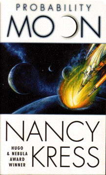

Probability Moonby Nancy Kress
publisher: Tor Science Fiction & Co.
Fiction, 297 pages | 
(book cover art, Copyright ©2000 Nancy Kress.)
|
Return to the Book MenuPrevious|Next
Description:
An anthropological expedition to the pre-industrial planet, "World" is seeking to understand how the people on this world can have a shared perspective - literally. For these people to disagree is synoymous with pain, and to be cast out is to be considered "unreal." The natives are all wondering whether the humans visiting them are "real," and the stakes are high for the expedition. But what the expedition doesn't know is that they are just cover for another mission that is taking place in the sky above them, as their ship investigates an artifact that could mean the salvation of the human race.
Recommended for: sociologists and anthropologists. People interested in military affairs, as well as people interested in worldviews outside of their own.
Did-you-read questions:
Deadline: February 1, 2005.
These should be easy questions, but you should have the questions ready and keep an eye out during your reading. Each question should be answered with 1-2 sentences.
Note: these questions are not probably not the most important part of the book! Your essay will not have to cover these questions!
- What is the most common type of personal transportation (other than walking) on World?
- What are the sunflashers?
- What does the proton beam do when it gets to the Skeeter?
- Why does Bazargan have trouble sqeezing through the cave?
- What happens when the artifact gets to the gate?
Report Questions:Deadline: Peer Review Session on February 8, 2005; paper due February 10, 2005.
You should write a 3 - 4 page essay on one of the following questions. Your essay should include examples and references to the book, unless otherwise specified. Page number references are sufficient for citing material from the primary book. If you use outside materials, cite your sources in full. If you would rather write on a different topic, you may, but clear it with Mr. Howe or Ms. Sullivan first.
- In many ways, this book is two stories in one: what happens on the surface of the planet and what happens in space. Did the two stories fit together well, or do you think that one could be better told without the other?
- Allen certainly has some issues, but is his dream of bringing shared reality to humanity one that you would like to see happen?
- In what ways have the humans' visit affected the people on World? Do you think any of them will have a lasting effect?
- Do you think the Worlders' society is likely to ever advance beyond where they are today? Give examples of things from the book that would suggest why they would or would not.
Graphic and Presentation:
Deadline: February 21 - March 3, 2005.You will give a 10 minute presentation on both of the following:
- Convince your peers that they should (or should not) read this book. (This may include a brief summary of the book.) Give examples of what was cool or worthwhile in the book, and what you got out of it (or didn't).
- Describe a (realistic) science idea that you learned about in this book, citing information from at least 2 external sources (other than the dictionary). If you would like help choosing or understanding an idea from your book, you are invited to come talk to Mr. Howe or Ms. Sullivan.
Note: This presentation should not be just a reading of your paper!Along with this presentation, you should have a graphic that will go with it. A Power Point presentation is recommended, but if you have a special idea for a something else, such as a model, an original video presentation, or a well done drawing/ painting/ sculpture/ etc., you may do so, provided it involves a similar level of effort and polish. Speak to Mr. Howe or Ms. Sullivan first if you are considering an alternate graphic format to the Power Point.
Return to the Book MenuPrevious|Next